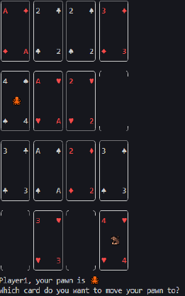
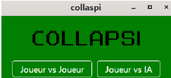
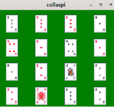

Collapsi Game
For this group project, the goal was to build a video game inspired by the card game called Collapsi. The game had to be coded in Python and playable from a command prompt. The point was to teach us good coding habits, and to make us think about how to write proper Python scripts.
The game code was splitted into various functions, and each was necessary to build the rules of a round, for example : reading the player's input, checking if a move was valid, or checking the win conditions. Handling errors was also important for this project, since we had to plan for most possible cases. Several test functions were coded to check that each function worked correctly.
Once the game was finished, we chose to add a graphical interface using the GTK3+ library, so players could play the game without using the command prompt. An AI opponent was also added to the game.
The project was written in multiple Python scripts, and an oral presentation was given to show the results.
Skills learned:
- Managing a project on GitHub
- Building a dynamic and interactive interface in Python with GTK3+
- Using good coding practices (test functions, docstrings, comments)
- Deepening my knowledge of Python
- Giving an oral presentation
Illustrations

Overview of a game in the command prompt


Overview of the game with the dynamic interface developed with GTK3+